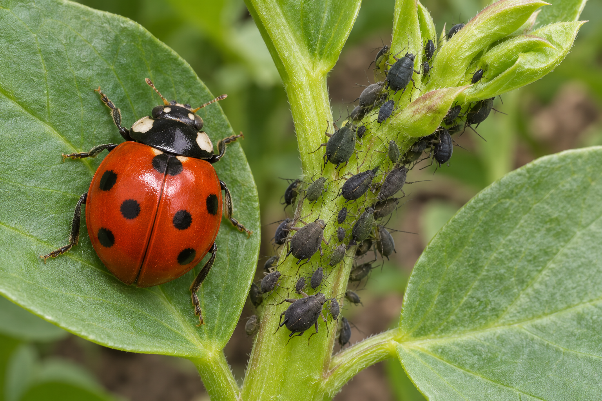

Testmodus aktiv · Alle Schritte und die Beispielerklärung sind frei zugänglich.

Daten als Tabelle lesen
Zeichne deine Vorhersage für die Marienkäfer.
Setze für jede Woche von 0 bis 12 einen Punkt ins Diagramm oder ziehe die Kurve mit Maus oder Finger. Einzelne Punkte kannst du durch Antippen verschieben.
Kurve über Zahlenwerte eingeben
Denkhilfe
Wovon hängt es ab, ob Marienkäferlarven überleben und sich zu Käfern entwickeln? Überlege, wann sich eine Veränderung im Bestand zeigen könnte.Was zeigen die Daten?
Meine ursprüngliche Begründung lesen
Untersuche die erste Welle (Woche 0 bis 6). In welcher Woche ist der Blattlausbestand am größten? Wann erreicht der Marienkäferbestand sein Maximum?
Vergleiche nun deine Vorhersage mit der Modellkurve der Marienkäfer. Belege eine Übereinstimmung oder Abweichung mit der Woche und den beiden Indexwerten.
Hilfe zum Vergleichen
Wähle eine Woche. Lies dort den Wert deiner gestrichelten Kurve und den Wert der orangefarbenen Kurve ab. Was fällt dir auf?Wie hängen die Bestandsänderungen zusammen?
Beginne oben links mit einer wachsenden Blattlauspopulation. Ergänze die drei Felder im Uhrzeigersinn, sodass sich der Kreis schließt. Jeder Pfeil bedeutet „trägt im Modell dazu bei, dass …“.
Denkhilfe
Denke beim ersten Pfeil an Nahrungsangebot, Überleben und Fortpflanzung. Verfolge beim zweiten Pfeil, wie sich die Zahl der gefressenen Blattläuse verändert.Meine Erklärung mit einer Beispielerklärung vergleichen
Bei reichlich Blattläusen finden Marienkäferlarven leichter Nahrung. Mehr Larven können überleben und sich zu Käfern entwickeln. So kann der Marienkäferbestand mit Verzögerung wachsen. Fressen die Käfer und ihre Larven mehr Blattläuse, als hinzukommen, sinkt der Blattlausbestand. Werden Blattläuse knapp, finden auch die Larven weniger Nahrung. Der Marienkäferbestand kann zurückgehen. Dadurch werden weniger Blattläuse gefressen und ihr Bestand kann wieder wachsen. Das Modell vereinfacht weitere Einflüsse wie Wetter und andere Nahrungsquellen.Vom Bohnenbeet zur ersten Lotka-Volterra-Regel
Vergleiche die beiden Wellen. Bei den Blattläusen liegen die Höchstwerte in Woche 2 und Woche 9. Bei den Marienkäfern folgen sie in Woche 4 und Woche 11. Der Abstand beträgt in diesem Beispiel jeweils zwei Wochen.
Erste Lotka-Volterra-Regel (Periodizitätsregel). Unter konstanten Umweltbedingungen schwanken im idealisierten Räuber-Beute-Modell die Bestände beider Populationen periodisch. Die Maxima der Räuberpopulation folgen zeitversetzt auf die Maxima der Beutepopulation.
Die Kurven im Bohnenbeet veranschaulichen dieses Muster mit konstruierten Daten. In einem realen Beet verändern etwa die Witterung und die Zuwanderung von Marienkäfern den Verlauf.